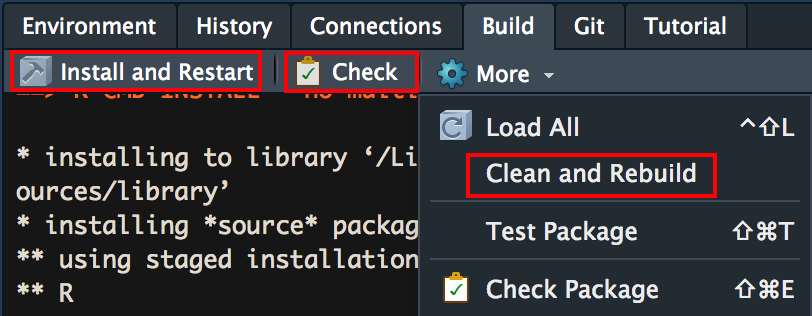

Software Design, Development, and Distribution in R
MinneAnalytics Women in Analytics and Data Science
Lindsey Dietz, PhD\(^1\)
Christina Knudson, PhD\(^2\)
2020-10-30 https://github.com/knudson1/WiADS2020/blob/master/doc/WiADS_Slides.pdf
WiADS_Slides.RmdDr. Dietz’s Disclaimer
The views expressed in this presentation are strictly my own. They do not necessarily represent the position of the Federal Reserve Bank of Minneapolis or the Federal Reserve System.
About Us
- Friends since meeting in our Statistics PhD program in 2011
- Co-organizers of R Ladies-Twin Cities and the noRth conference
- Both cyclists & coffee lovers

Objectives of this talk
library(MyFirstPackage) # Design your R package design_package() # Build your R package build_package() # Distribute your R package distribute_package() #Profit!
Our Assumptions
- You have some experience programming in R
- You have some experience on Git (i.e. we won’t show you how to set it up)
- You have some custom R functions on your computer that get used repeatedly
- You have an audience (including yourself) for your code

What is a design document?
- A blueprint or recipe for your project with plenty of details
- Doc written with the understanding that future-you will forget these details otherwise
Why use a design document? (2 of 5)
- Separates thinking and coding

Imagine creating enchiladas without a recipe!
Why use a design document? (3 of 5)
- Forces you to explain everything in detail
- Helps you predict problems and tricky points

Why use a design document? (4 of 5)
- Helps you divide the work into reasonable modules so you can split it between days or people and make sure it it will come together seamlessly

No need to ladle and stir at the same time.
Why use a design document? (5 of 5)
- Helps future you/developers understand what you had done so that you can create improvements or additions
- Helps you remember everything you’ll inevitably forget

What to include in your design document
- Goal of each function
- Inputs and outputs of each
- Flow chart between functions
- Calculations/equations
- Any tricky points
- Numerical stability considerations
- How you will approach each function (and some pseudo code)
- Tests you will implement (again goals, details)
- Helpful sketches
- Major updates
- Things you want to add/change in the future
Building An R Package

- You have the building blocks - (1) repeatable processes + (2) custom functions
- You have a design document that lays out what your tree will look like
Create the Package
Building a package used to take expert knowledge. Not anymore!
Several R packages exist that make the process extremely accessible
Option #1 - Use the Rstudio interface: File -> New Project -> New Directory -> R Package
Option #2 - Use the aptly named
usethispackage
#install.packages('usethis') library(usethis) usethis::create_package("~/MyFirstPackage")
Add files for your functions
- Option #1 - Create .R files with your function and move them into the package’s R folder
- Option #2 -
usethispackage
usethis::use_r('target_psrf') usethis::use_r('minESS')
If R functions are new to you, check out this resource: https://r4ds.had.co.nz/functions.html

Add help documentation for functions
- In an R package, help documentation is mandatory; good documentation is optional (but not really!)
- While you can create documents manually (in the man folder), the
roxygen2package makes it easy to create the documentation with your code

Check, build, and install your package
Option #1 Use the tools in Rstudio 
Option #2 Use the devtools package (can be useful when things get more complicated)
devtools::check() devtools::build() devtools::install()
Customize
- Add tests, package dependencies, vignettes!
- A comprehensive R package building resource: https://r-pkgs.org/index.html


Why Distribute Your R Package?
- Gains in usership/citations for those in the public domain (academics, nonprofits)
- Gains in productivity for those in private industries
- Saving future you time with third parties such as audit
- You control the narrative of your code
Distibution in Git
- Git has become a dominant version control technique so we are demo-ing our work on Github
- Git makes it easy to (1) track changes over time (2) plan future changes (3) work with teams
- Git is well integrated into RStudio

Git Jargon
- Git has A LOT of jargon. Don’t let it overwhelm you and ask questions of those who use it as a second language. (https://git-scm.com/docs)
- Some start-up words:
- repository - a remote folder for your things on your Git site of choice (Github, GitLab, etc.)
- clone - make a copy of your remote repository on your computer
- pull - incorporate changes from a remote repository into your local clone
- commit - record changes to your local clone
- push - update remote repository with changes from your commits
- An amazing and free resource for R users is Jenny Brian’s book: https://happygitwithr.com/